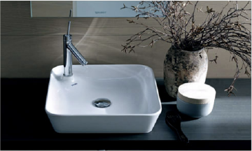
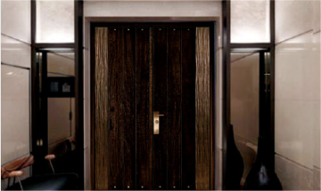

<div class="introduction_card03_block"><div class="container"><h2 class="title text-center mb-5">細緻本善</h2><div class="sub_title text-center d-flex align-items-center">健康、生活、美學兼具</div><ul class="row p-0 card03 mt-5"><li class="col-md-4 mb-5"><div class="image mb-4"></div><div class="wrap"><div class="title mb-3"><h3>德國 POGGENPOHL</h3></div><div class="body mb-3"><p>世界重量級名人鍾愛<br>德國國家形象代表<br>百年品牌賓士級廚具系統</p></div></div></li><li class="col-md-4 mb-5"><div class="image mb-4"></div><div class="wrap"><div class="title mb-3"><h3>德國 DURAVIT</h3></div><div class="body mb-3"><p>結合傳統的美學觀點<br>厚實工藝技術<br>紮實的結構體<br>經年後仍歷久如新</p></div></div></li><li class="col-md-4 mb-5"><div class="image mb-4"></div><div class="wrap"><div class="title mb-3"><h3>YKK門窗</h3></div><div class="body mb-3"><p>日本第一品牌關西機場指定<br>高隔音、高水密、高氣密窗<br>換氣框，實現會呼吸的健康居家</p></div></div></li><li class="col-md-4 mb-5"><div class="image mb-4"></div><div class="wrap"><div class="title mb-3"><h3>敵銳防火裝甲門</h3></div><div class="body mb-3"><p>義大利原裝進口<br>六星級大門</p></div></div></li><li class="col-md-4 mb-5"><div class="image mb-4"></div><div class="wrap"><div class="title mb-3"><h3>鐠適保鐵捲門</h3></div><div class="body mb-3"><p>美觀耐用噪音小<br>人性化設計</p></div></div></li><li class="col-md-4 mb-5"><div class="image mb-4"></div><div class="wrap"><div class="title mb-3"><h3>益之源淨水器</h3></div><div class="body mb-3"><p>奈米級高密度活性碳濾心<br>殺死99.99%以上的細菌與病毒<br>不需煮沸、可生飲</p></div></div></li></ul><div class="more_btn text-center"><a href="/">預約賞屋</a></div></div></div>